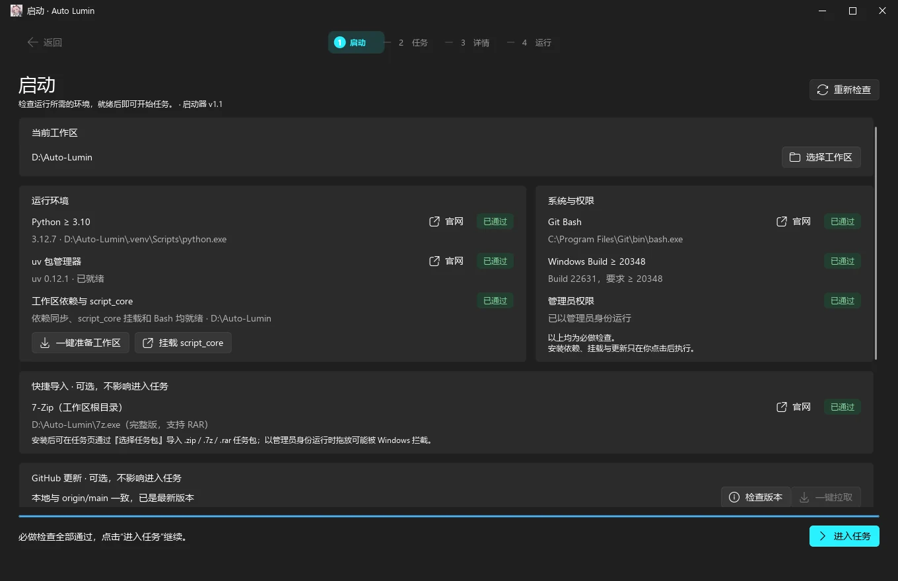

窗口绑定
按进程名或窗口标题绑定目标，坐标始终基于客户区，窗口移动也不会影响操作。
绑定游戏窗口，识别画面与声音，回放键盘鼠标动作。 写一次脚本，之后交给启动器：环境自检、任务分类、日志与中断都替你处理好。

启动页 · 六项环境检查，全部通过后才可进入任务
Capabilities
一套 Python API 覆盖窗口、图像、声音与输入回放；启动器负责环境、任务和进程。你只需要写脚本。
按进程名或窗口标题绑定目标，坐标始终基于客户区，窗口移动也不会影响操作。
模板匹配返回最佳中心坐标，支持 ROI 与三种算法；像素计数可做快速颜色判断。
只监听绑定进程的声音，提示音越过阈值即执行动作；不混入系统混音与其他程序。
开发工具录制真实键鼠时序，导出 .stepscript；脚本中加载后后台回放，可暂停、继续或中止。
递归扫描 Task/ 下所有 this.task，分类、搜索、按修改时间排序，一键进入详情与运行。
运行页分栏显示调试 log 与普通输出；F12 全局中断立即结束进程，运行期间禁止误返回。
Interface
启动页只做检查，任务页只做选择，详情页确认后才会运行。浅色与深色主题都跟随系统级质感。
Deployment
启动器只是入口，运行任务还需要工作区环境。全部命令在项目根目录执行。
安装 Python 3.10+、uv 与 Git for Windows。Git Bash 是启动器激活虚拟环境的必要组件，不能用 WSL 的 bash 替代。
uv --version
git --version克隆仓库，或下载完整工作区。启动器需要与 pyproject.toml、uv.lock、script_core 和 Task 同级。
git clone https://github.com/sueenthear/Auto-Lumin.git
cd Auto-Lumin按锁文件同步依赖，并把 script_core 以 editable 方式挂载到工作区虚拟环境。
uv sync --locked把 AutoLumin.exe 放到工作区根目录，双击启动。程序会请求管理员权限，六项检查全部通过后点击“进入任务”。
Auto-Lumin/
├─ AutoLumin.exe
├─ pyproject.toml
├─ uv.lock
├─ script_core/
├─ Task/
└─ .venv/在 Task/ 下任意层级的文件夹中放入 this.task 与运行脚本，重新扫描即可出现在任务页。
Task/日常/采集/
├─ this.task
├─ run.py
└─ 说明.pngScripting
用 this.task 描述任务，用 run.py 写流程。启动器会激活工作区环境，以 run.py 所在目录为工作目录。
Task/ ├─ 日常/ │ └─ 采集/ │ ├─ this.task # 任务描述 │ ├─ run.py # 运行入口 │ └─ 说明.png # 可选说明图 └─ 周常/ └─ 副本/ ├─ this.task └─ run.py
titledescriptionrun_targetthis.task 的 Python 文件，默认 run.py。description_image.png，留空表示无图。editor / versionthis.task 的路径，且不能越出工作区。全局 F12 会直接结束进程，不会执行 finally 清理。
{
"title": "每日采集",
"description": "按固定路线完成每日采集。",
"editor": "your-name",
"version": "1.0",
"run_target": "run.py",
"description_image": "说明.png"
}from script_core import Core
do = Core("Lumin.exe", timeout=10) # 按进程名绑定窗口
do.thisfile # 工作目录切到脚本所在目录
do.window.activate() # 恢复最小化并置于前台
if do.match.exist("claim.png", threshold=0.9):
do.mouse.click.left # 属性访问即执行
do.wait(0.6)
actions = do.steps.load("actions.stepscript")
do.steps.start(actions)
do.steps.wait(actions)
if actions.error is not None:
raise actions.errordef on_sound():
do.keyboard.click("shift") # 匹配到提示音后执行
do.audio.action(on_sound)
do.audio.listen.threshold(0.35) # 阈值 (0, 1]
do.audio.listen.start() # 只监听目标进程
while True:
do.wait(1) # 保活；F12 全局中断Community
现成的任务脚本、版本更新与问题反馈都在群里。不会写代码也没关系，先跑起来，再按自己的习惯改。
在 QQ 中搜索群号即可加入 · 加群请注明来意
FAQ
几个最常见的疑问。其余问题可以直接在群里问。
AutoLumin.exe 位于包含 pyproject.toml、uv.lock、script_core 与 Task 的目录中，并已执行 uv sync --locked；也可以在启动页手动选择工作区。this.task + run.py。